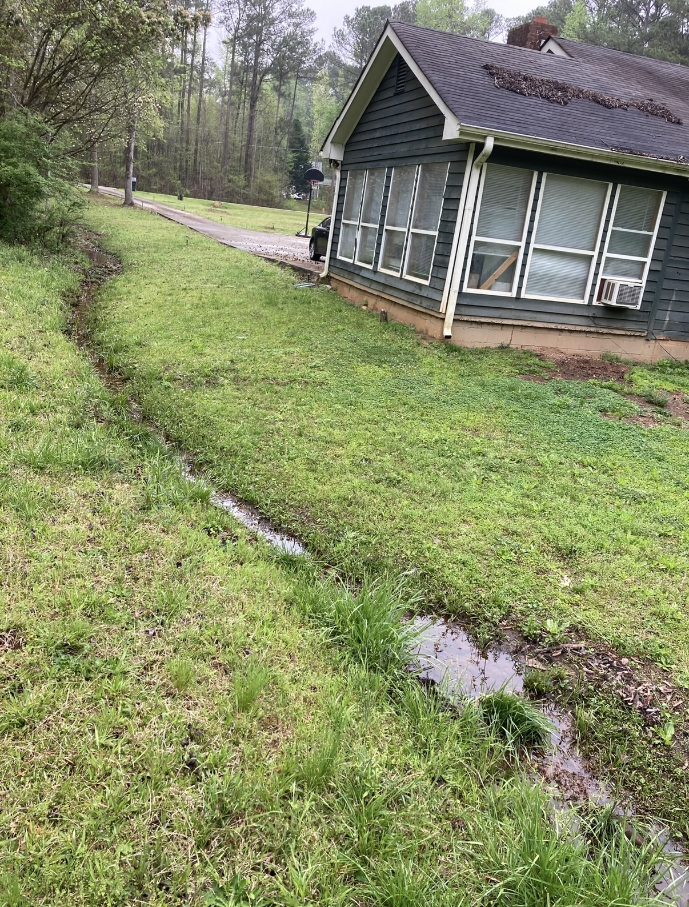
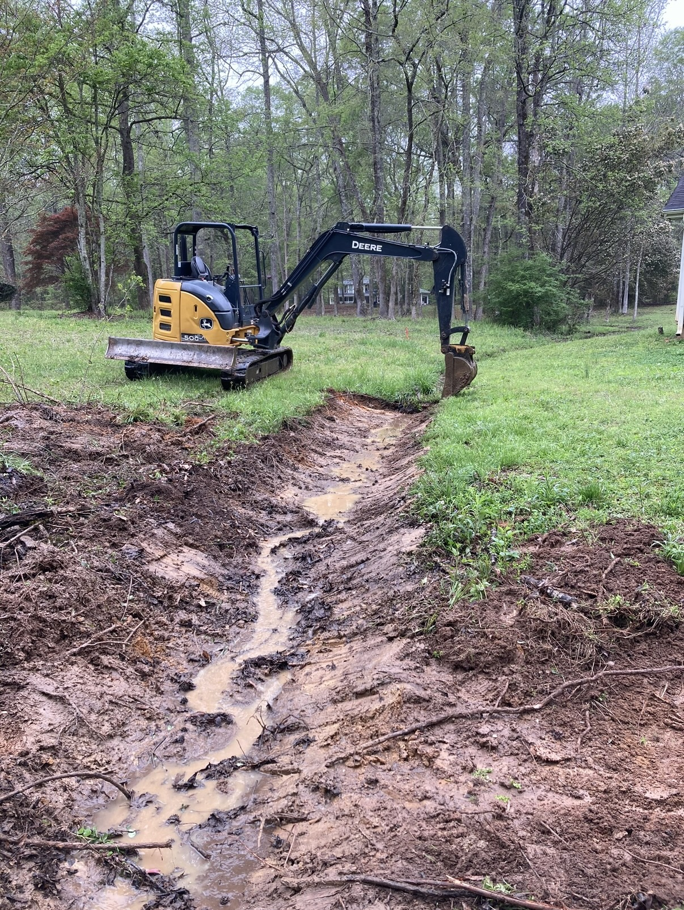
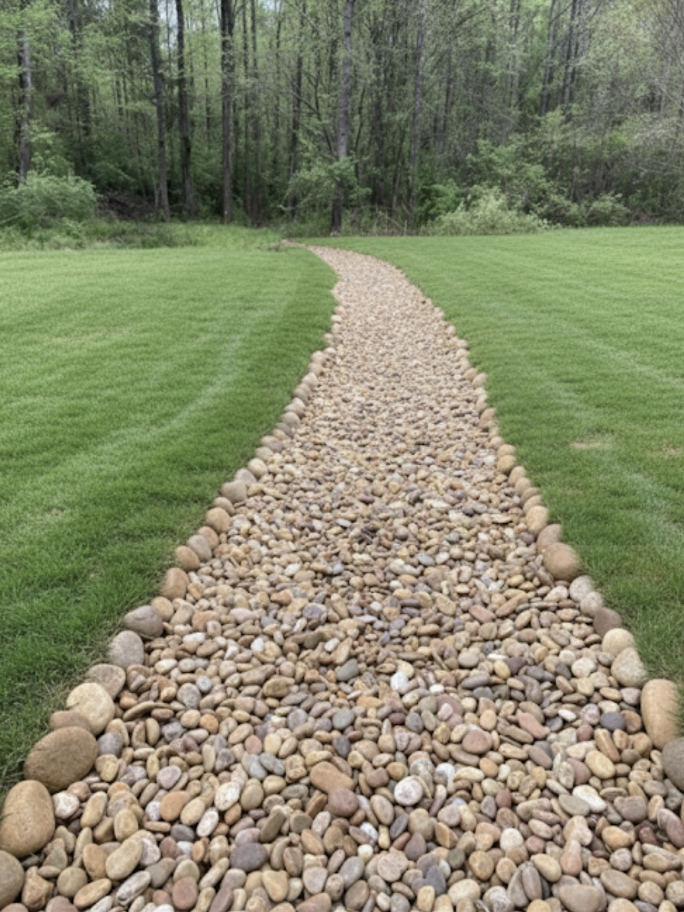

French Drain Installation Built Around Real Water Flow Problems
A good French drain is not just a trench with pipe. The drainage path, discharge direction, water source, and surrounding grade all matter. We look at where the water is starting, where it is traveling, and where it needs to be taken so the property performs better after rain.
Standing Water in the Yard
Low spots that stay wet, hold water, or turn into mud after rain often need drainage correction and proper discharge routing.
Foundation Water Issues
Water collecting near the house can create long-term problems. French drains can help move runoff away from structures and problem edges.
Downspout Tie-Ins
When downspouts are dumping into the same saturated area, tying them into a proper drainage path can reduce repeated washout and pooling.
Drainage + Grading
Many jobs improve when pipe installation is paired with grading adjustments so surface water keeps moving in the right direction.
What a Typical French Drain Scope Can Include
Every property is different, but a drainage correction project commonly includes trenching, pipe placement, aggregate where needed, tie-ins from water sources, and a discharge plan that gets runoff away from the area that is failing.
Typical Work Items
- Drainage trench layout based on water path
- French drain pipe installation
- Downspout tie-ins where needed
- Discharge routing away from structures and traffic areas
- Light grading to support surface drainage
- Clean-up and a workable finished area
Why Systems Fail
- No good outlet or discharge route was planned
- Water source was never correctly identified
- Surface grade still pushes water back to the problem area
- Downspouts keep feeding the same saturated section
- The job was installed for appearance, not long-term water movement
- The property needed grading support, not pipe alone
Recent Drainage Work
Real project photos that support trust, conversion, and local service relevance.



Standing water corrected, runoff redirected, and the finished area left clean and workable.
Google Reviews
See the business profile and customer review presence directly on Google.
Thumbtack Profile
Review the active service profile and project-driven lead history.
YouTube Project Content
Project footage and business content that support legitimacy and field experience.
Direct Contact
Call or text 912-254-1918 for the fastest quote path.
French Drain Service Areas
Built around the same service-area logic as the main site, with target relevance for Athens, Lawrenceville, Dacula, Auburn, and surrounding Northeast Georgia searches.
- Athens, GA French Drain & Drainage Services
- Lawrenceville, GA French Drain & Yard Drainage
- Dacula, GA Drainage Contractor
- Auburn, GA Yard Drainage & Site Work
- Northeast Georgia service coverage for drainage correction, grading, and water control
French Drain Questions
These FAQs support both buyers and search visibility.
What does a French drain help with?
A French drain helps move water away from low spots, muddy sections, fence lines, and foundation-adjacent areas where runoff collects and keeps the ground oversaturated.
Can downspouts be tied into a drainage system?
Yes. When roof runoff is feeding the same weak area of yard, downspouts can often be tied into a proper drainage path to reduce pooling and washout.
Do French drains work better with grading?
In many cases, yes. Drainage problems often improve most when the drain system and the surface grade are both directing water the same way.
What areas do you serve?
Landco Development LLC serves Northeast Georgia, including Athens, Lawrenceville, Dacula, and Auburn.
Get a Fast Quote
If your yard stays wet, water is collecting near the house, or an older system never fixed the problem, send the details here and Landco can review the drainage path and job scope.
Best Fit for This Page
- French drain installation
- Standing water and muddy yard correction
- Downspout runoff control
- Foundation runoff problems
- French drain + grading solutions
Fastest way to reach us: call or text 912-254-1918.
Call or Text Now